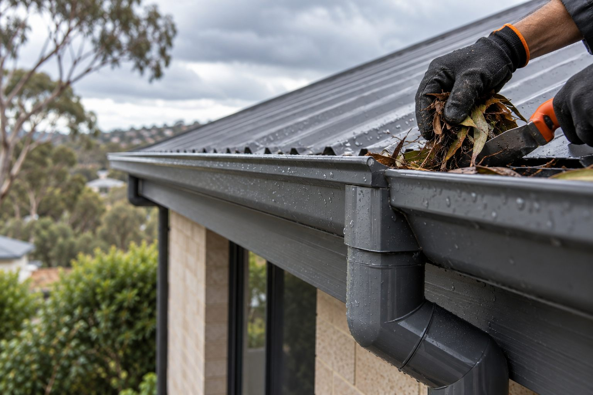

Service areas
Adelaide roof repair service areas.
Roof repair support across Adelaide, planned around the property, roof type and service required.
Browse by region
These region groups organise the existing roof repair locality pages around Adelaide. Choose the page closest to your property to read its service information, then share your suburb and roof issue when enquiring so Ellis can confirm an appointment and the appropriate work scope.
Central
Roof repairs in Adelaide CBD · Roof repairs in North Adelaide
North/North-East
Roof repairs in Prospect · Roof repairs in Salisbury · Roof repairs in Modbury · Roof repairs in Campbelltown
Inner East
Roof repairs in Norwood · Roof repairs in Kensington · Roof repairs in Burnside
Inner South
Roof repairs in Unley · Roof repairs in Goodwood · Roof repairs in Glen Osmond
West/Coastal
Roof repairs in Henley Beach · Roof repairs in Glenelg · Roof repairs in Port Adelaide
Coverage by district
Find your road.
Choose the Adelaide district closest to the property, then select a main road. The enquiry form will carry the location through for you.